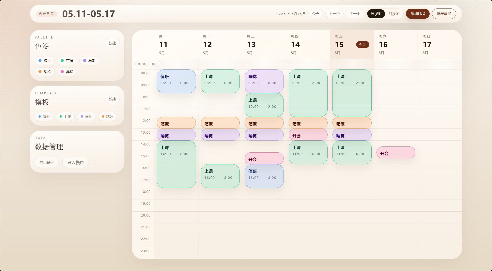
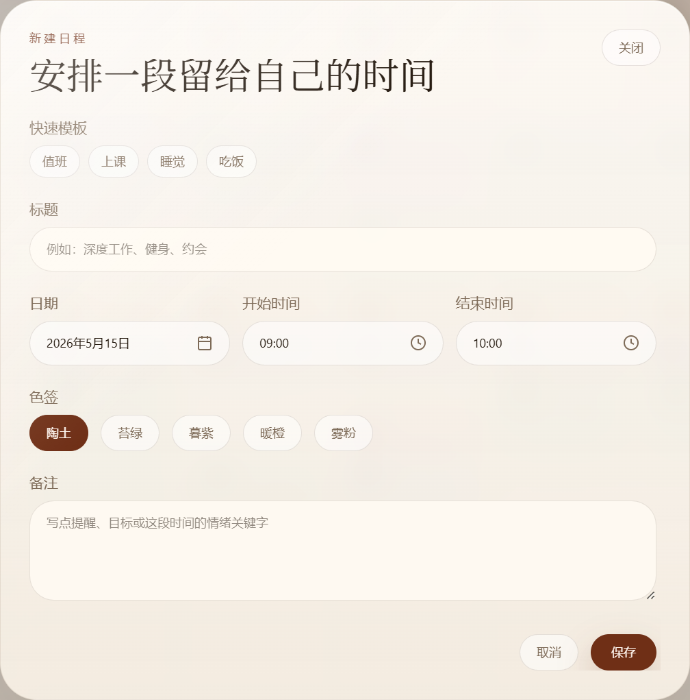
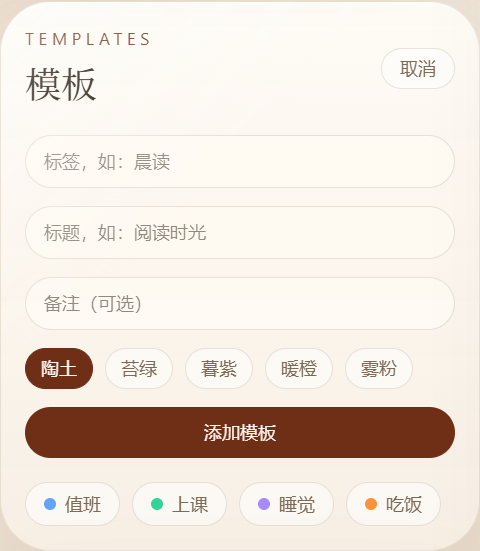
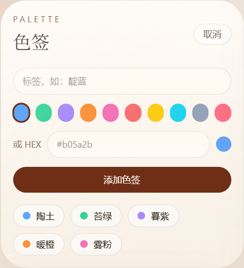
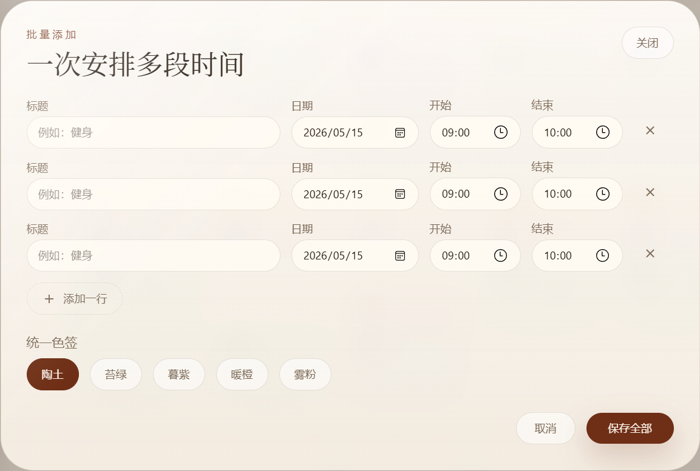
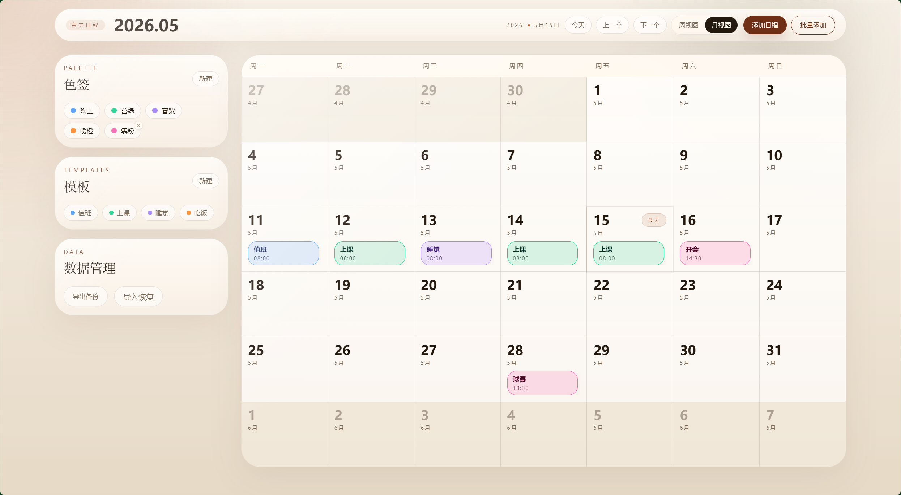
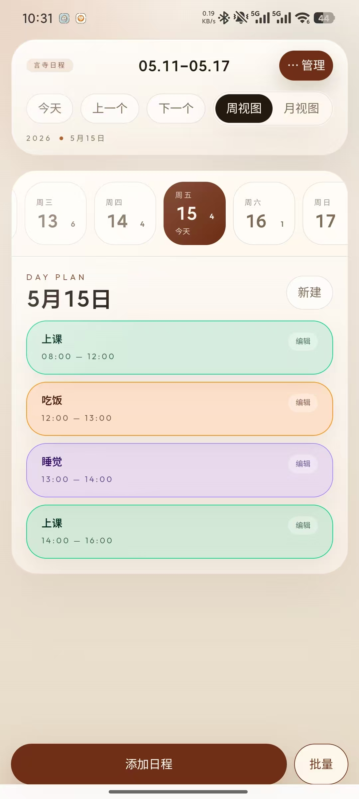
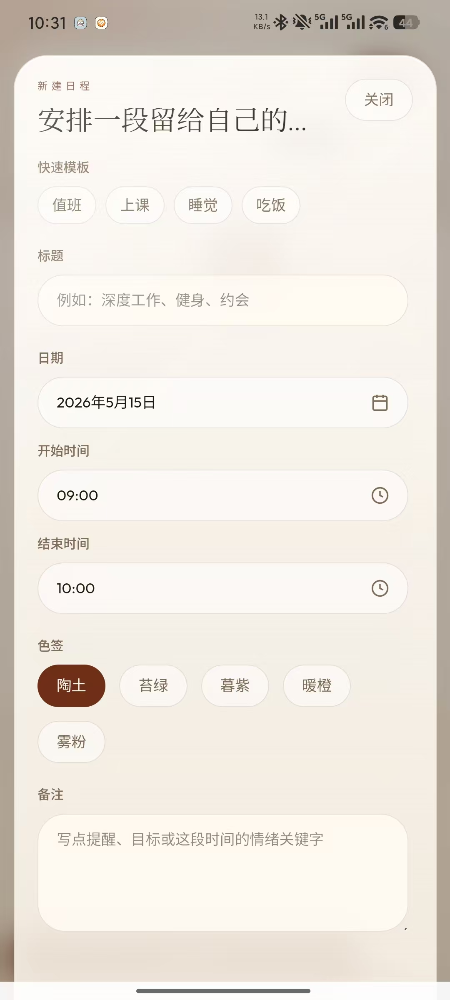
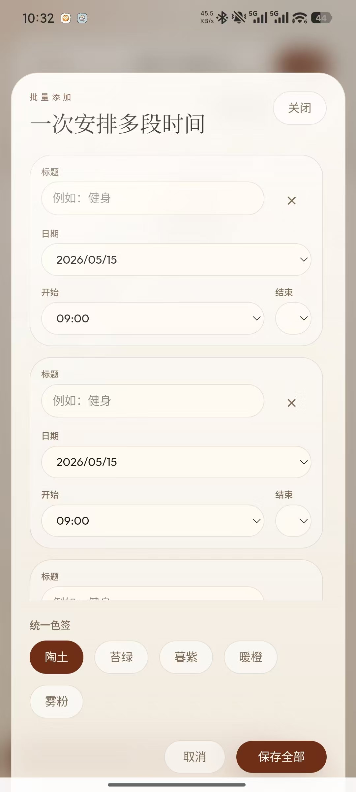
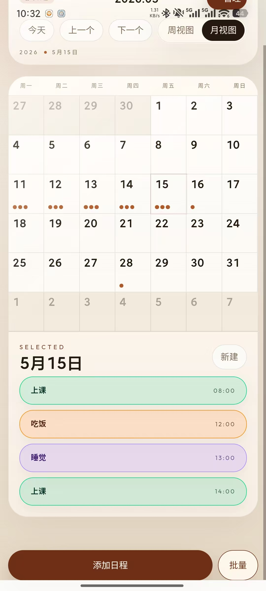

Project Report · Yansi Schedule
01 / 10
Vue 3 · Tauri 2 · Android · Local First
言寺
日程
一个本地优先的中文日程管理应用，从网页日历扩展到 Windows 桌面端与 Android 移动端。
Arrow / Swipe
Positioning
02 / 10
Core Statement
让日程回到
日历本身
不是复杂协同系统，而是面向个人学习、工作和生活节奏的本地工具。
Why it matters
传统日程工具常把“记录”变成配置负担。
言寺日程把常用行为压缩成直接操作：点日期、点时间、套模板、选色签、导入导出。用户不需要理解数据结构，也能把一天安排清楚。

Visual Evidence · Main UI
03 / 10
温暖纸张质感
日历工作台
桌面端保留完整信息密度：周视图、月视图、侧栏管理和当天日程形成一个连续工作台。
2views
周视图 / 月视图
3panels
色签 / 模板 / 数据
1local
本地优先数据路径
Feature Set
04 / 10
四个稳定
使用闭环
01 / Calendar
周月视图
课程表式时间轴与整月网格，覆盖不同粒度的安排方式。
02 / Schedule
日程编辑
标题、日期、开始结束时间、色签、备注与冲突检测。
03 / Template
模板复用
高频事项可以保存为模板，降低重复输入成本。
04 / Data
数据迁移
导入、导出、清空，本地数据可控且可回滚。
言寺日程 · project reportfeature architecture
Desktop Evidence
05 / 10
Desktop Screens
PC 端：高信息密度





Responsive Strategy
06 / 10
Desktop
信息并列
减少切换
PC 端保留侧栏、管理入口、完整日历网格和当天列表，适合连续录入和批量整理。
Mobile
操作收敛
触达更短
移动端把低频管理折叠到顶部“⋯ 管理”，创建动作下沉，弹窗与状态栏使用安全区适配。
same data modeldifferent interaction density
Mobile Evidence
07 / 10
Android / WebView
移动端：为小屏重排




Architecture
08 / 10
System Diagram
一套前端
三种运行环境
Vue 负责交互，Pinia 承接状态，Tauri 负责桌面与 Android 封装；存储层按环境自动切换。
UIVue 3
BuildVite
StatePinia
DateDay.js
StyleTailwind
DesktopTauri 2
MobileAndroid
StorageLocal First
Vue / Vite / Pinia / TauriChrome storage fallback to localStorage
Engineering Timeline
09 / 10
Iteration Path
从网页工具
推进到可安装应用
01
日历核心
周视图、月视图、选中日期、日程列表与冲突检测。
02
效率模块
模板、色签、批量添加、备注、数据导入导出。
03
移动适配
状态栏沉浸、安全区、管理浮窗、弹窗滚动与触控布局。
04
图标与品牌
统一桌面端、Android、网页 favicon 的应用图标。
05
发版链路
Windows MSI / NSIS 与 Android APK / AAB 构建产物。
module by module commitsrollback-friendly workflow
Release Output
10 / 10
Delivery
桌面与移动
均可发版
项目已经具备面向个人使用的完整交付链路：Web、Windows 安装包、Android 安装包，以及可迁移的本地数据。
Web
OK
MSI
OK
NSIS
OK
APK
OK
AAB
OK
言寺日程 · 0.1.0local first schedule planner
Closing
11 / 11
Takeaway
小工具
也要完整交付
从体验、数据、移动端、图标到安装包，言寺日程已经从页面原型走到可使用产品。
Next
3 Focus
01
继续打磨移动端触控体验
02
补充真实使用场景的数据反馈
03